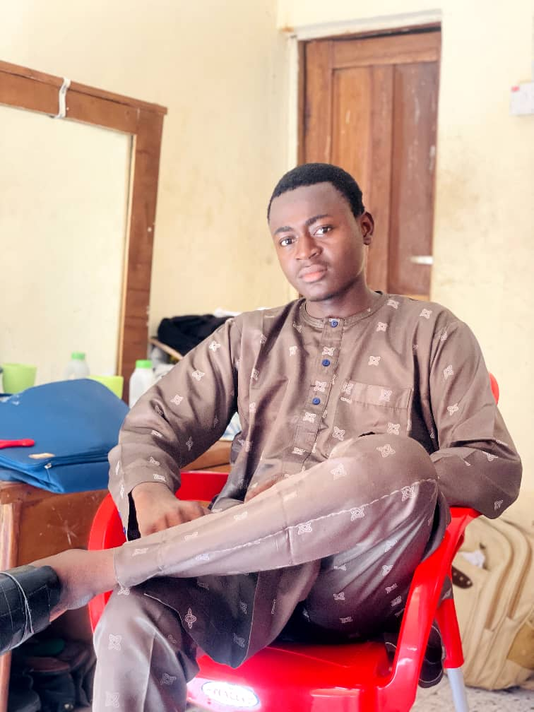

Meet Some of NHS Facilitators And Interns
SPONSOR
 Alhaji Salihu Kantigi
HUB MANAGER
Alhaji Salihu Kantigi
HUB MANAGER
 Miss Nafisat Aguye
WEB DEV. TUTOR
Miss Nafisat Aguye
WEB DEV. TUTOR
 mr. Elijah paul
INTERN:
mr. Elijah paul
INTERN: Web development
 Muhammad Mukhtar Muhammad
INTERN:
Muhammad Mukhtar Muhammad
INTERN: project management
 Sumayya Giwa
INTERN:
Sumayya Giwa
INTERN: project management Ahmad Kabeer INTERN:
Data Analysis
 Muhammad Haruna
INTERN:
Muhammad Haruna
INTERN: Cloud Computing
 HAJ. NAFISAT
INTERN:
HAJ. NAFISAT
INTERN: WEB DEVELOPMENT KASIM SHUKURAT INTERN:
WEB DEVELOPMENT
 SAIDU ALAMIN HASSAN
INTERN:
SAIDU ALAMIN HASSAN
INTERN: DATA ANALYSIS
 AISHA HUMAIRA
INTERN:
AISHA HUMAIRA
INTERN: CLOUD COMPUTING  UMAAR FAROUK YUSUF
© 2025 Muhammad Mukhtar Muhammad-Web Dev Intern.